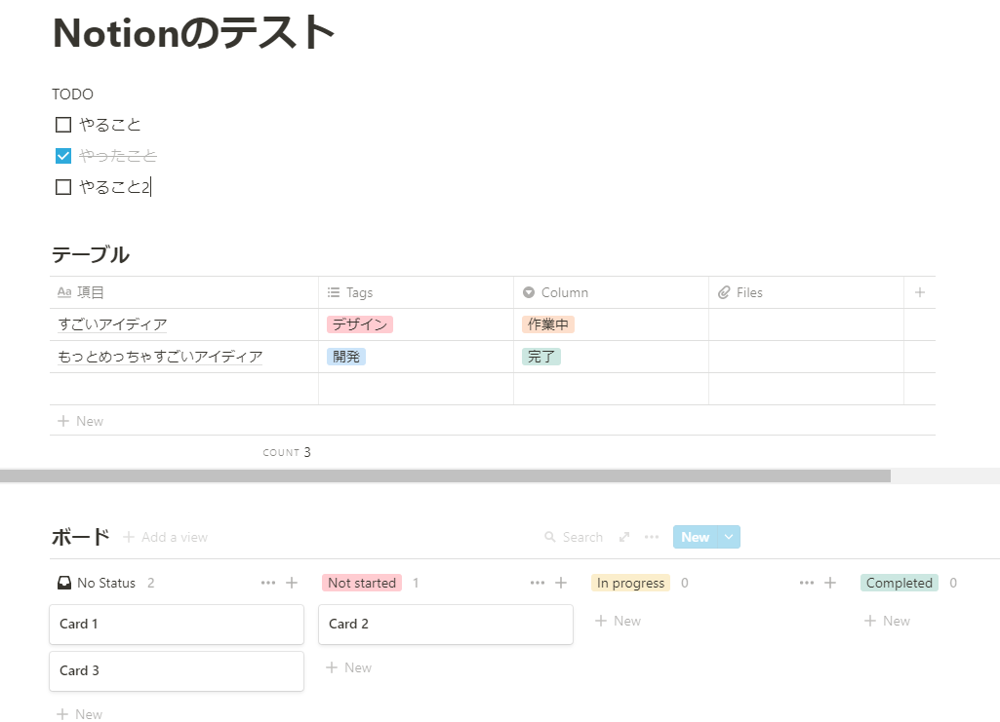
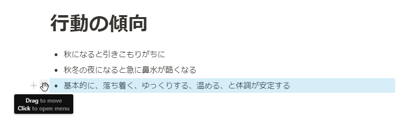
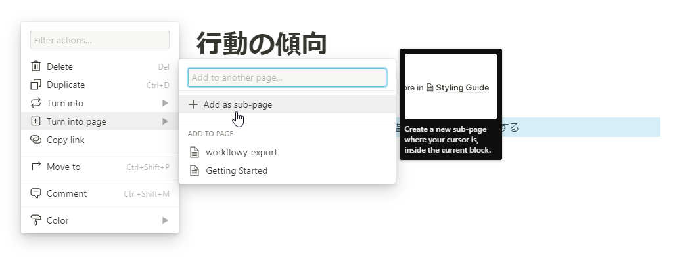

投稿日: 2020/10/14 21:47:39
カテゴリ: タスク管理
サムネイル: なし
先日、WorkFlowyに全てを書いているという話を書いてから、文字通り全てをWorkFlowyにまとめてきた。
例えばTODOはもちろんのこと、作りたいと思ってるもの、思いついたもの、仕事上のタスク、サブスクのリスト、ぜーんぶ書き込んで整理して、すごく思考がスッキリ。
…が、やっぱり全てがWorkFlowyで済むかというと必ずしもそうでもなく、特に他人と共有したいときはしぶしぶ別のツールを使ってきた。
そんななか、最近Notionを知った。
Notionのなにがすごいかは他の記事にもたくさん書かれているけれど、Notionのすごいところはその自由度とデータベースにある。

WorkFlowyが惜しかったのは、データベース的な機能。例えばタスク管理のように何か似たようなものを分類して整理して並べるとき、結局はテキストエディタなのであまりきれいに整理することができず、結局Trelloやスプレッドシートのようなツールの方が便利になってくる。（なのでWorkFlowyは最初のアイディアをひたすら深めていくのには向いてる。）
Notionはまさにその部分を解決するツールとして最高。とにかく自由度が高く、テーブルだろうとタスクボードだろうと自分の好きなツールを組み合わせてドキュメントを作っていくことができる。
最初Notionを始めたとき、WorkFlowyみたいにどんどん箇条書きを深く書いていって、ページ分けを気にせず深く入っていけたらなぁと思っていたけれど、後からそれも可能だと気づいた。


ちょっと気づきにくいのだけれど、Turn into xx という機能があって、最初はまずダラダラと自分の思いつきを書いていって、「あ、これは別ページに分けたい」とか「これはチェックリストであるべきだった」と思ったらすぐにそれが実行できる。
しかもWorkFlowyは無料のままでかなり使用できる。ファイルアップロードも1ファイル5MBまでなら無料。ゲストも5人までの招待なら無料。この制限も月400円程度払えば解消できるのですごい。
ちなみにインポート機能もあって、WorkFlowyやEvernote、Asanaからデータをインポートできる。（完全ではないので整形は必要。）
……ということで、いま自分は徐々にWorkFlowy + TrelloからNotionへの移行を進めている途中。ただ既にWorkFlowyに思いついたことをひたすら書く習慣が身に付いているので、なかなか完全には移行が進んでいないものの、WorkFlowyではできなかった写真のクリップとかWebクリップ（今まではTrelloとかでしてた）を中心に徐々にNotionに移行しているので、近々完全に移行できるかな。
WorkFlowyのシンプルさもすごく好きだったので、惜しい気もするけど、ツールが分散してしまうことが個人的には一番辛いので、Trelloとスプレッドシートでやってたことを統合できるのはホントありがたい限り。